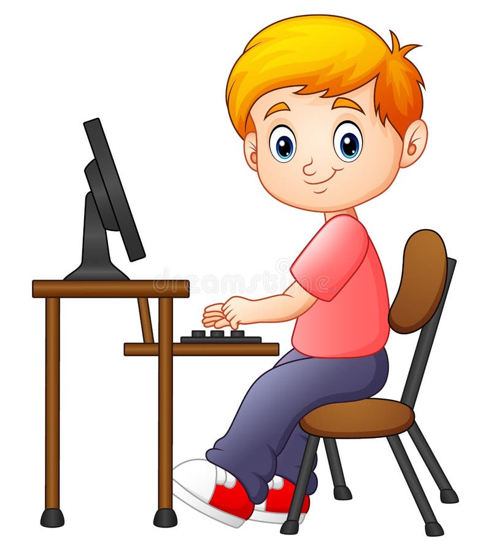

Welcome to the Study Playground of Computer Fundamentals..Find below the topics to learn ...
Syllabus for Test:

A computer is a programmable electronic device that accepts raw data as input and processes it with a set of instructions (a program) to produce the result as output. It renders output just after performing mathematical and logical operations and can save the output for future use. It can process numerical as well as non-numerical calculations. The term "computer" is derived from the Latin word "computare" which means to calculate.
More content to be loaded soon......